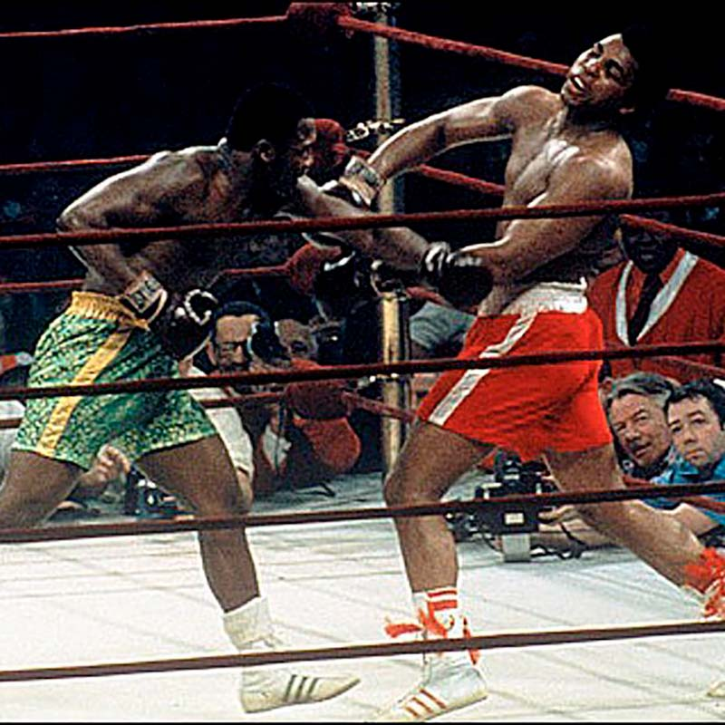
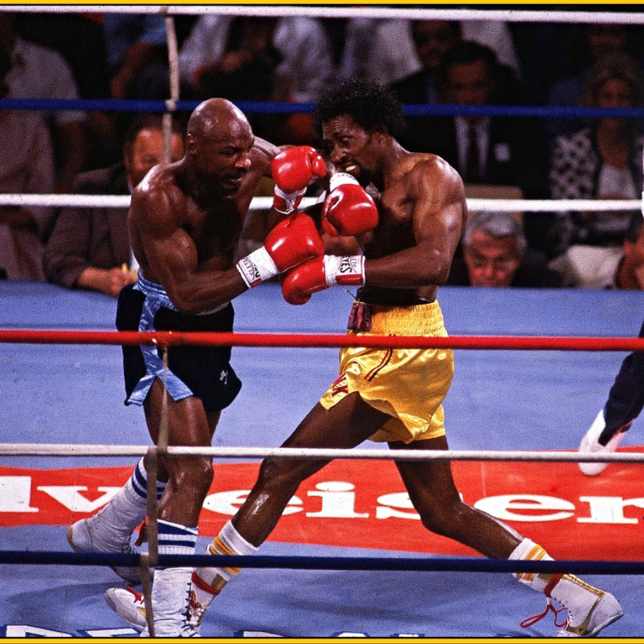
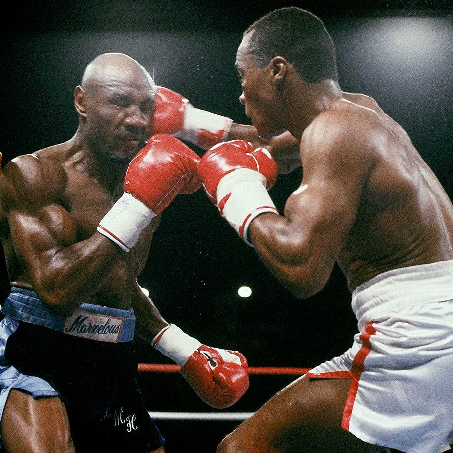
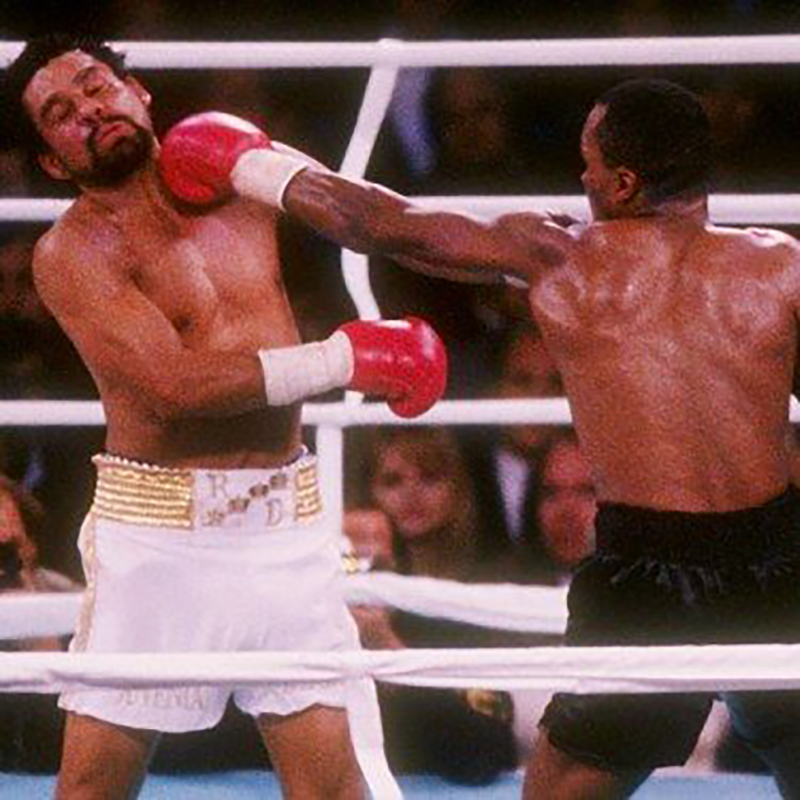

 Мохаммед Али – Джо Фрейзер, третий бой. 1 октября 1975 год, Манила
 Марвин Хаглер – Томас Хирнс. 4 апреля 1985 год, Лас-Вегас
 Шугар Рэй Леонард – Марвин Хаглер. 6 апреля 1987 год, Лас-Вегас
 Роберто Дюран – Айрен Баркли. 24 февраля 1989 год, Лас-Вегас